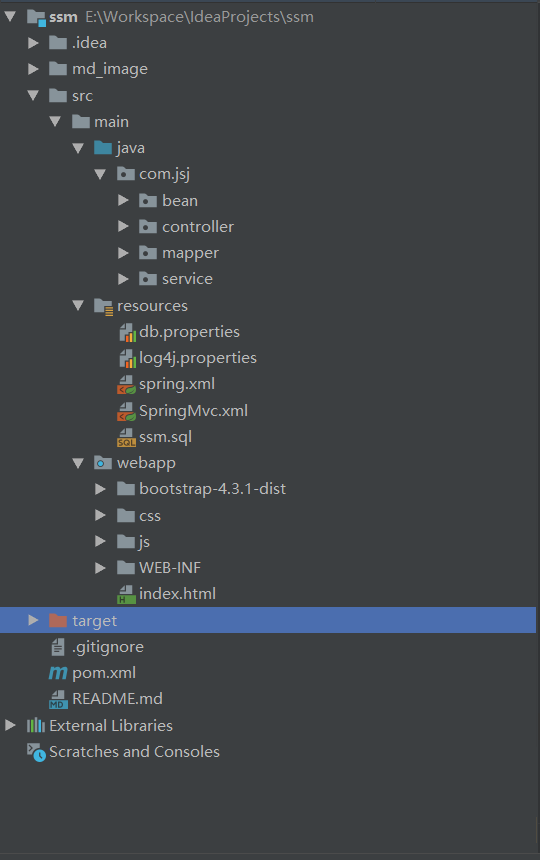
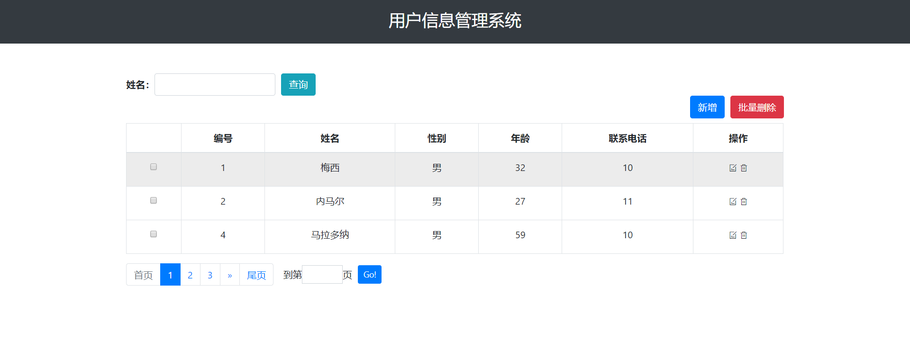

SSM框架是Spring+SpringMvc+Mybatis框架的整合，它是目前主流JavaWeb框架之一。
Spring：一个强大的IOC容器。同时提供了各种的模块便于各领域的开发。
SpringMvc：spring框架中的一个模块，应用于web层即Controller层。它的本质是Servlet，用于接收/响应请求。
Mybatis：持久层ORM框架，连接并操作数据库。
Java8 + MySQL8 + IDEA2019 + tomcat9 + maven3.6
开发环境尽量保持一致，以免出现不必要的错误。
接下来开始干活！！！
<properties>
<project.build.sourceEncoding>UTF-8</project.build.sourceEncoding>
<maven.compiler.source>1.7</maven.compiler.source>
<maven.compiler.target>1.7</maven.compiler.target>
<spring.version>4.3.18.RELEASE</spring.version>
<!-- log4j日志文件管理包版本 -->
<slf4j.version>1.7.25</slf4j.version>
<log4j.version>1.2.17</log4j.version>
</properties>
<dependencies>
<!--单元测试-->
<dependency>
<groupId>junit</groupId>
<artifactId>junit</artifactId>
<version>4.12</version>
</dependency>
<!-- 日志文件管理包 -->
<dependency>
<groupId>log4j</groupId>
<artifactId>log4j</artifactId>
<version>${log4j.version}</version>
</dependency>
<dependency>
<groupId>org.slf4j</groupId>
<artifactId>slf4j-api</artifactId>
<version>${slf4j.version}</version>
</dependency>
<dependency>
<groupId>org.slf4j</groupId>
<artifactId>slf4j-log4j12</artifactId>
<version>${slf4j.version}</version>
</dependency>
<!-- 数据库驱动 -->
<dependency>
<groupId>mysql</groupId>
<artifactId>mysql-connector-java</artifactId>
<version>8.0.13</version>
<scope>runtime</scope>
</dependency>
<!--数据库连接池-->
<dependency>
<groupId>com.mchange</groupId>
<artifactId>c3p0</artifactId>
<version>0.9.5.4</version>
</dependency>
<!-- MyBatis -->
<dependency>
<groupId>org.mybatis</groupId>
<artifactId>mybatis</artifactId>
<version>3.4.6</version>
</dependency>
<dependency>
<groupId>org.mybatis</groupId>
<artifactId>mybatis-spring</artifactId>
<version>1.3.2</version>
</dependency>
<!-- Spring -->
<!-- 1.Spring核心 -->
<dependency>
<groupId>org.springframework</groupId>
<artifactId>spring-core</artifactId>
<version>${spring.version}</version>
</dependency>
<dependency>
<groupId>org.springframework</groupId>
<artifactId>spring-beans</artifactId>
<version>${spring.version}</version>
</dependency>
<dependency>
<groupId>org.springframework</groupId>
<artifactId>spring-context</artifactId>
<version>${spring.version}</version>
</dependency>
<!-- 2.Spring DAO层 -->
<dependency>
<groupId>org.springframework</groupId>
<artifactId>spring-jdbc</artifactId>
<version>${spring.version}</version>
</dependency>
<dependency>
<groupId>org.springframework</groupId>
<artifactId>spring-tx</artifactId>
<version>${spring.version}</version>
</dependency>
<!-- 3.Spring web -->
<dependency>
<groupId>org.springframework</groupId>
<artifactId>spring-web</artifactId>
<version>${spring.version}</version>
</dependency>
<dependency>
<groupId>org.springframework</groupId>
<artifactId>spring-webmvc</artifactId>
<version>${spring.version}</version>
</dependency>
<!-- Servlet web -->
<dependency>
<groupId>javax.servlet</groupId>
<artifactId>javax.servlet-api</artifactId>
<version>3.1.0</version>
</dependency>
<!-- Jackson -->
<dependency>
<groupId>com.fasterxml.jackson.core</groupId>
<artifactId>jackson-databind</artifactId>
<version>2.9.9.2</version>
</dependency>
<dependency>
<groupId>com.fasterxml.jackson.core</groupId>
<artifactId>jackson-core</artifactId>
<version>2.9.9</version>
</dependency>
</dependencies>
<build>
<finalName>ssm</finalName>
<resources>
<resource>
<directory>src/main/java</directory>
<includes>
<include>**/*.properties</include>
<include>**/*.xml</include>
</includes>
</resource>
<resource>
<directory>src/main/resources</directory>
</resource>
</resources>
</build>
另外可以自己创建目录用于单元测试。
jdbc.driver=com.mysql.cj.jdbc.Driver
mysql.url=jdbc:mysql://localhost:3306/ssm?characterEncoding=UTF-8&serverTimezone=UTC
mysql.username=root
mysql.password=****这里注意几点：
1.如果你使用MySQL5.0+的版本，驱动要改为com.mysql.jdbc.Driver。
2.在mysql.url属性中对应的数据库链接要规定字符编码，一般需要支持中文就设置为UTF-8。
3.serverTimezone用于设置时区，这里设置为UTC。也可以设置为我们所在的时区---东八区GMT%2B8。不然容易出现时区异常报错，如下：
java.sql.SQLException: The server time zone value 'Öйú±ê׼ʱ¼ä' is unrecognized or represents more than one time zone. You must configure either the server or JDBC driver (via the serverTimezone configuration property) to use a more specifc time zone value if you want to utilize time zone support.
# Global logging configuration
log4j.rootLogger=DEBUG, stdout
# MyBatis logging configuration...
log4j.logger.org.mybatis.example.BlogMapper=TRACE
# Console output...
log4j.appender.stdout=org.apache.log4j.ConsoleAppender
log4j.appender.stdout.layout=org.apache.log4j.PatternLayout
log4j.appender.stdout.layout.ConversionPattern=%5p [%t] - %m%n这份配置文件的内容是官网提供的，想了解更多请参考log4j官网：http://logging.apache.org/log4j/2.x/
<?xml version="1.0" encoding="UTF-8"?>
<beans xmlns="http://www.springframework.org/schema/beans"
xmlns:xsi="http://www.w3.org/2001/XMLSchema-instance"
xmlns:context="http://www.springframework.org/schema/context"
xsi:schemaLocation="http://www.springframework.org/schema/beans
http://www.springframework.org/schema/beans/spring-beans.xsd
http://www.springframework.org/schema/context
http://www.springframework.org/schema/context/spring-context.xsd">
<!--加载数据库属性文件-->
<context:property-placeholder location="classpath:db.properties"/>
<!--自动扫描包-->
<context:component-scan base-package="com.jsj.service"/>
<!-- 数据库连接池 -->
<bean id="dataSource" class="com.mchange.v2.c3p0.ComboPooledDataSource">
<!-- 配置连接池属性 -->
<property name="driverClass" value="${jdbc.driver}"/>
<property name="jdbcUrl" value="${mysql.url}"/>
<property name="user" value="${mysql.username}"/>
<property name="password" value="${mysql.password}"/>
</bean>
<!--配置SessionFactory-->
<bean id="sqlSessionFactory" class="org.mybatis.spring.SqlSessionFactoryBean">
<property name="dataSource" ref="dataSource"/>
<!--扫描bean包 配置pojo别名-->
<property name="typeAliasesPackage" value="com.jsj.bean"/>
</bean>
<!--mapper扫描器(使用mybatis接口代理开发的模式)-->
<bean class="org.mybatis.spring.mapper.MapperScannerConfigurer">
<property name="sqlSessionFactoryBeanName" value="sqlSessionFactory"/>
<property name="basePackage" value="com.jsj.mapper"/>
</bean>
</beans>这里由于mybatis的配置需要较少，因此直接集成到spring的配置文件中而没有另外配置mybatis-config.xml。
<?xml version="1.0" encoding="UTF-8"?>
<beans xmlns="http://www.springframework.org/schema/beans"
xmlns:xsi="http://www.w3.org/2001/XMLSchema-instance"
xmlns:context="http://www.springframework.org/schema/context"
xmlns:mvc="http://www.springframework.org/schema/mvc"
xsi:schemaLocation="http://www.springframework.org/schema/beans
http://www.springframework.org/schema/beans/spring-beans.xsd
http://www.springframework.org/schema/context
http://www.springframework.org/schema/context/spring-context.xsd
http://www.springframework.org/schema/mvc
http://www.springframework.org/schema/mvc/spring-mvc.xsd">
<!-- 开启mvc注解驱动 -->
<mvc:annotation-driven>
<!-- 中文响应编码 -->
<mvc:message-converters>
<bean class="org.springframework.http.converter.StringHttpMessageConverter">
<property name="supportedMediaTypes">
<list>
<value>text/html;charset=UTF-8</value>
<value>text/plain;charset=UTF-8</value>
<value>application/json;charset=UTF-8</value>
</list>
</property>
</bean>
</mvc:message-converters>
</mvc:annotation-driven>
<!--自动扫描包-->
<context:component-scan base-package="com.jsj.controller"/>
<!-- 视图解析器 -->
<bean
class="org.springframework.web.servlet.view.InternalResourceViewResolver">
<!-- 配置jsp路径的前缀 -->
<property name="prefix" value="/WEB-INF/view/" />
<!-- 配置jsp路径的后缀 -->
<property name="suffix" value=".jsp" />
</bean>
</beans> 开启mvc注解驱动时自动注册映射器和适配器，同时配置指定编码数据绑定。如果是前后端分离开发，后端只负责提供数据接口则不需要视图解析器。 <!-- 配置spring的字符编码过滤器，保证request请求的中文字符不会乱码 -->
<filter>
<filter-name>CharacterEncoding</filter-name>
<filter-class>org.springframework.web.filter.CharacterEncodingFilter</filter-class>
<init-param>
<param-name>encoding</param-name>
<param-value>utf-8</param-value>
</init-param>
</filter>
<filter-mapping>
<filter-name>CharacterEncoding</filter-name>
<!-- 过滤所有请求 -->
<url-pattern>/*</url-pattern>
</filter-mapping>
<!-- 配置Spring的servlet监听器 -->
<listener>
<listener-class>org.springframework.web.context.ContextLoaderListener</listener-class>
</listener>
<!-- 加载spring容器 -->
<context-param>
<param-name>contextConfigLocation</param-name>
<param-value>classpath:spring.xml</param-value>
</context-param>
<!--springmvc前端控制器 -->
<servlet>
<servlet-name>springMvc</servlet-name>
<servlet-class>org.springframework.web.servlet.DispatcherServlet</servlet-class>
<!--加载springmvc.xml-->
<init-param>
<param-name>contextConfigLocation</param-name>
<param-value>classpath:SpringMvc.xml</param-value>
</init-param>
</servlet>
<!--设置映射路径-->
<servlet-mapping>
<servlet-name>springMvc</servlet-name>
<url-pattern>*.do</url-pattern>
</servlet-mapping> 基于ssm+jquery实现的用户管理系统：https://github.com/Lionel340/ssm（入门案例，单表的增删改查）

基于ssm实现的社区项目：https://github.com/Lionel340/ssm_community
如果你觉得项目案例对你有用，还希望能点个star、fork支持一下。
如果文章有错的地方欢迎指正，大家互相交流。欢迎关注公众号developerLeo！会更新一些个人学习的文章。